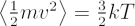
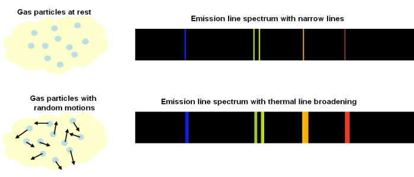

In a gas, the individual atoms, elements or molecules are continuously moving in random directions, with an average speed proportional to the temperature of the gas:

The term on the left-hand side is the mean kinetic energy. The individual gas particles (with mass m) follow a Maxwellian velocity distribution, resulting in a spread of velocities, v, about the average value. On the right hand side of the equation, T is the temperature of the gas and k the Stefan-Boltzmann constant.
Compared to a stationary observer, any particular atom, element or molecule could be moving along the line-of-sight, perpendicular to the line-of-sight, or some combination of both. This means that every spectral line emitted is Doppler shifted relative to the observer, resulting in a small change in the observed wavelength. This spreading of a spectral line due to the temperature of the emitting medium is called ‘thermal Doppler broadening’.

Thermal Doppler broadening is also possible for absorption lines. Particles in the absorbing medium will have random motions, so Doppler shifts in the absorbed wavelengths can occur.